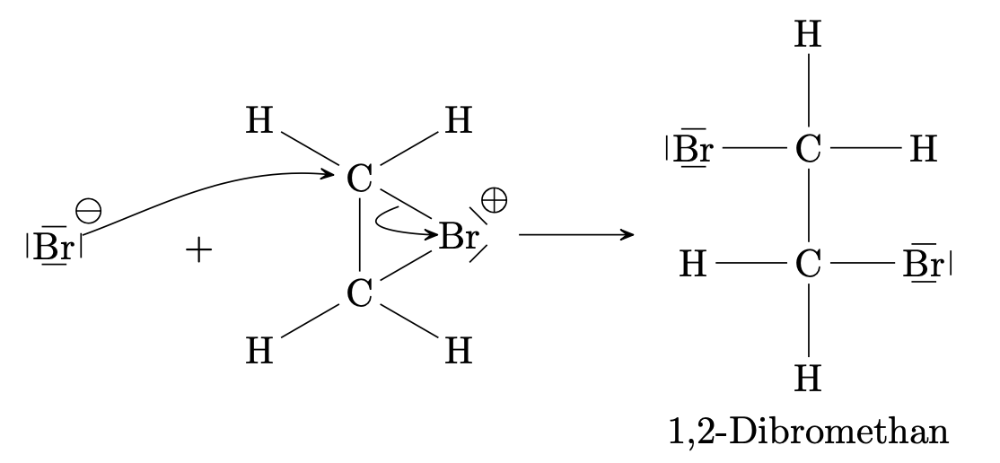
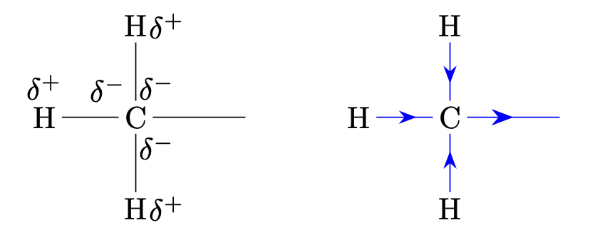
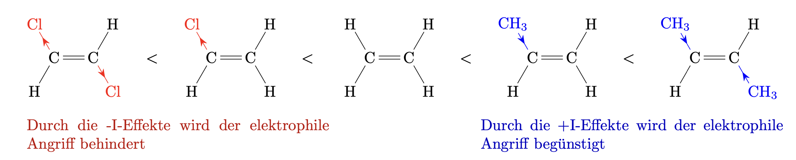

Alkene
Grundlagen
Alkene sind ungesättigte Kohlenwasserstoffe. Das bedeutet einige Kohlenstoffatome sind durch Doppelbindungen verbunden.
Homologe Reihe der Alkene
Name |
Halbstrukturformel |
Summenformel |
|---|---|---|
|
Ethen |
$\ce{H2C=CH2}$ |
$\ce{C2H4}$ |
|
Propen |
$\ce{H2C=CH-CH3}$ |
$\ce{C3H6}$ |
|
Buten |
$\ce{H2C=CH-CH2-CH3}$ oder |
$\ce{C4H8}$ |
Formel
Allgemein gilt für Alkene:
$$ \ce{C_nH_{2n}} $$Definition
Alkene haben die allgemeine Summenformel $\ce{C_nH_{2n}}$. Die Namen der Alkene haben die Endung -en.
Isomerie
Isomerie ist
Isomere sind unterschiedliche Moleküle welche die gleiche Summenformel besitzen. Sie können durch unterschiedliche Strukturformeln dargestellt werden.
Nomenklatur
Regeln
-
Die längste Kette die, die Doppelbindung enthält wird gewählt
-
Die Nummerierungsrichtung wird so gewählt, dass die Doppelbindungen die kleinsten Positionen erhalten.
Tabelle der zwischenmolekularen Kräfte
Name |
Zwischenmolekulare Kräfte |
|---|---|
Alkane |
van-der-Waals-Kräfte |
Alkene |
van-der-Waals-Kräfte; |
Alkanole |
van-der-Waals-Kräfte; |
Chemische Eigenschaften
Die Doppelbindung oder $\pi$-Bindung ist eine Schwachstelle für das Alkenmolekül. Dies bedeutet, dass das Alken Molekül dort angegriffen werden kann, dies macht das Molekül reaktionsfreudiger als Alkanmoleküle.
Verbrennung
-
Vollständige Verbrennung:
$$\ce{2C3H6 + 9O2 -> 6CO2 + 6H2O}$$
Hier Propen. -
Unvollständige Verbrennung:
$$\ce{C4H8 + 2O2 -> 4C + 4H2O}$$
Hier Buten.
Elektrophile Addition
Bei einer Additionsreaktion werden Atome oder Atomgruppen an die Doppelbindung eines ungesättigten Ausgangsstoffs angelagert. Es entsteht eine gesättigte Verbindung.
Mechanismus der elektrophilen Addition eines Halogens an ein Alken
Hier reagiert beispielsweise Ethen mit Brom zu 1,2-Dibromethan:
$$ \ce{C2H4 + Br2 -> C2H4Br2} $$-
Es erfolgt der elektrophile, also der elektronenfreundliche, Angriff des Brommoleküls auf die $\ce{C=C}$ Doppelbindung.
-
Beim Annähern des $\ce{Br2}$-Moleküls an die negativ geladene Doppelbindung werden die Elektronen im Molekül zum hinteren Bromatom zurückgedrängt. Das Brommolekül wird polarisiert. Es bilden sich Teilladungen $\delta^+$ und $\delta^-$ .
-
Das $\delta^+$ geladene Bromatom tritt in Wechselwirkung mit den $\pi$-Elektronen der Doppelbindung. Es entsteht ein $\pi$-Komplex.
-
Die Bindung im $\ce{Br2}$-Molekül wird heterolytisch gespaltet und ein Bromidion $\ce{Br-}$ freigesetzt. Das andere, positiv geladene Brom-Ion bildet mit den beiden $\ce{C}$-Atomen $\sigma$-Bindungen und es entsteht ein cyclisches Bromoniumion genannt $\sigma$-Komplex.
-
-
Es erfolgt nun der nukleophile Angriff des Bromidions von der Rückseite des Bromoniumions aus.

Elektrophiler Angriff
Bei einer elektrophilen Reaktion (hier: Addition) erfolgt die erste Wechselwirkung im Mechanismus durch ein elektronenanziehendes Teilchen. Der Angriff erfolgt auf einen Bereich mit hoher negativer Ladungsdichte.
$+I$-Effekt
Alkylgruppen erhöhen die negative Ladungsdichte an dem Atom an dem sie gebunden sind; sie wirken elektronenschiebend.
$-I$-Effekt
Halogene oder Hydroxygruppen verringern die negative Ladungsdichte an dem Atom an dem sie gebunden sind; sie wirken elektronenziehend.
Induktiver Effekt
Der induktive Effekt bewirkt die Veränderung der Elektronendichte an
benachbarten beziehungsweise weiter entfernt liegenden Atomen durch
elektronenschiebende
$+I$ oder elektronenziehende
$-I$
Substituenten.
Auswirkungen
-
Elektronenschiebende $+I$ Atome oder Atomgruppen an der Doppelbindung erhöhen die negative Ladungsdichte an der Doppelbindung und begünstigen einen elektrophilen Angriff. Die Reaktionsgeschwindigkeit der Additionsreaktion wird erhöht.
-
Elektronenziehende $-I$ Atome oder Atomgruppen an der Doppelbindung verringern die negative Ladungsdichte an der Doppelbindung und behindern einen elektrophilen Angriff. Die Reaktionsgeschwindigkeit der Additionreaktion wird verringert.
Auswirkungen des induktiven Effekts auf die Art der Reaktionsprodukte
Bei der Addition von unsymmetrischen Molekülen an eine Doppelbindung hat
der induktive Effekt nicht nur einen Einfluss auf die
Reaktionsgeschwindigkeit, sondern ebenfalls auf die Art des gebildeten
Produkts.
Hier als Beispiel: Reaktion von Chlorwasserstoff mit Propen
Reaktionsmechanismus der Addition eines Halogenwasserstoffs an ein Alken
Es erfolgt der elektrophile Angriff von $\ce{HCl}$ auf die Doppelbindung:

Beim elektrophilen Angriff des Wasserstoffatoms entsteht kein cyclisches Kation sondern die positive Ladung konzentriert sich auf eines der Kohlenstoffatome die an der Doppelbindung beteiligt waren. Es entsteht ein Carbokation. Je nachdem, an welches der beiden C-Atome der Doppelbindung sich das Wasserstoffatom bindet, können zwei verschiedene Carbokationen entstehen, die dann zu zwei verschiedenen Produkten weiterreagieren:

Allerdings sind die beiden Carbokationen A und B unterschiedlich gut stabilisiert und werden dadurch unterschiedlich schnell gebildet.
-
Die positive Ladungsdichte des Carbokations A wird durch den elektronenschiebenden Effekt von einer Alkylgruppe, hier: Methylgruppe, verringert; die des Carbokations B durch zwei $+I$-Effekte.
-
In Carbokation B ist die positive Ladung besser verteilt; es ist besser stabilisiert als Carbokation A.
Die Bildung des stabileren Carbokations B erfordert eine kleinere Aktivierungsenergie als die Bildung von A. Da sich das Carbokation B einfacher und schneller bildet als A entsteht auch bevorzugt das Reaktionsprodukt, das aus B hervorgeht: 2-Chlorpropan.
Schlussfolgerung
Es entsteht bevorzugt dasjenige Produkt, dessen Bildung über das besser stabilisierte Carbokation, auch genannt Carbeniumion, verläuft. Die Stabilität eines Carbokations steigt mit der Anzahl an Alkylgruppen die es trägt.
Stabilität von Carbokationen
Die Stabilität von Carbokationen wird durch die Atome oder Atomgruppen die es trägt beeinflusst
-
$+I$-Atome oder Gruppen verringern die positive Ladung des Carbokations und erhöhen seine Stabilität.
-
$-I$-Atome oder Gruppen erhöhen die positive Ladung des Carbokations zusätzlich. Sie verringern seine Stabilität.
Markownikow-Orientierung
Bei der Anlagerung von Halogenwasserstoffen an asymmetrische Alkene wird das Wasserstoffatom an das das wasserstoffreichere Kohlenstoffatom gebunden. Man sagt: ”Wer hat dem wird gegeben”.